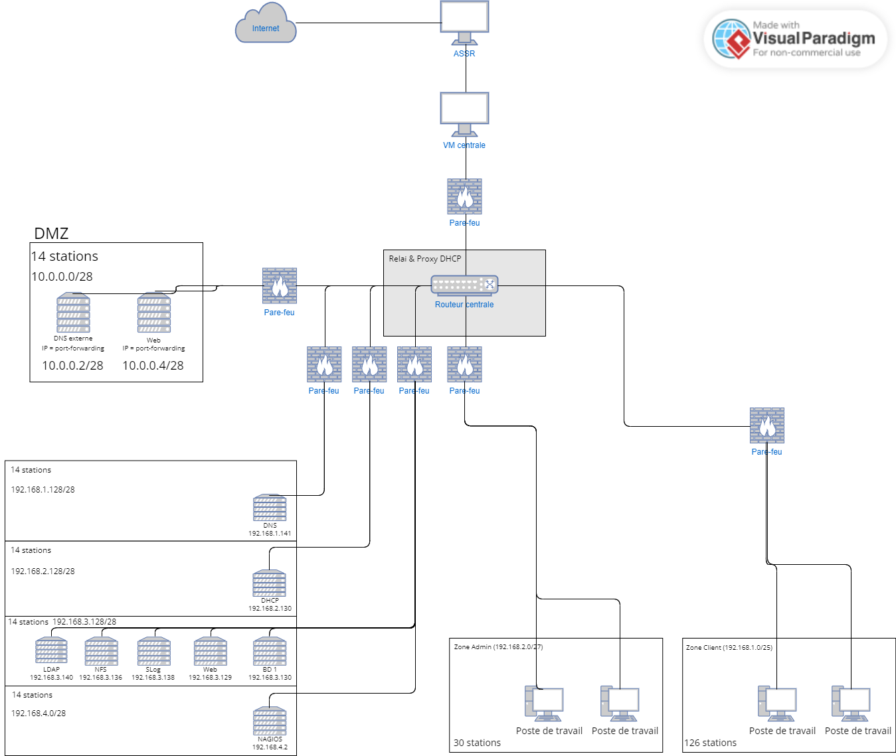
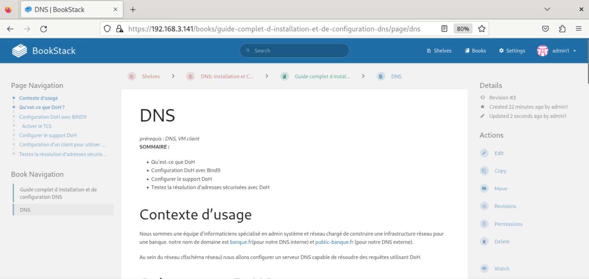
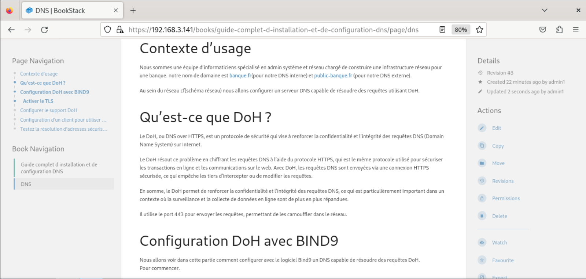

Création d'une infrastructure réseau d'une banque
J'ai crée dans un groupe de 4 personne une infrastructure réseau fonctionnelle s'exécutant sur des machines virtuelles.
Postes utilisateurs
Postes administrateurs
DNS over TLS / over HTTPS
DHCP
Proxy DHCP
Serveur NFS
Monitoring
serveur de log centralisé
Création d'un wiki pour un développeur voulant recréer l'infrastructure


Authentification LDAP
Nous avons crée des postes avec une interface graphique que peuvent utiliser les employés de l'entreprise
Nous avons crée des postes avec une interface graphique que peuvent utiliser les administrateurs de l'entreprise
Nous avons mis en place un DNS Interne et un DNS interne permettant de résoudre les noms de domaine internes à l'entreprise mais aussi ceux d'internet
La mise en place du DHCP a permis l'automatisation de la configuration réseau de chaque machine
Nous avons mis en place un proxy DHCP pour que les machines de différents sous réseaux puissent être configurés par un DHCP situé sur un réseau séparé de tout.
Nous avons mis en place un serveur NFS permettant de mettre à disposition des fichiers pour tous les sous réseau de l'infrastructure
Nous avons en place un serveur permettant de monitorer l'activité de l'infrastructure
Nous avons mis en place un serveur de log centralisant les logs de toutes les machines de l'infrastructure.
Nous avons mis en place un mécanisme d'authentificartion LDAP pour notre wiki
Compétences développées
Travail en collaboration
Notions d'installation réseau
Compétences en résea
Respect des normes RGPD
J’ai appris à collaborer au sein d’une équipe et à bien segmenter les tâches afin de gagner du temps.
J'ai beaucoup appris sur les mécanismes à mettre en place pour mettre en réseau différentes machines
J'ai grandement amélioré mes compétences en réseau informatique car j'ai pu voir concrétement comment fonctionnaient toutes les machines utilisant différentes technologies
Notre application a dû être pensée pour respecter les normes RGPD notamment sur la collecte des données de mineurs. Cela nous a obligé à avoir une analyse de l'application et d'adapter ce qu'on codait pour respecter ces normes. Maintenant j'ai une vison bien claire de l'implémentation des normes RGPD dans une application informatique